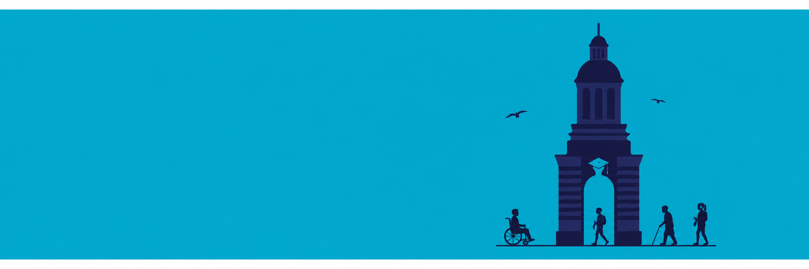
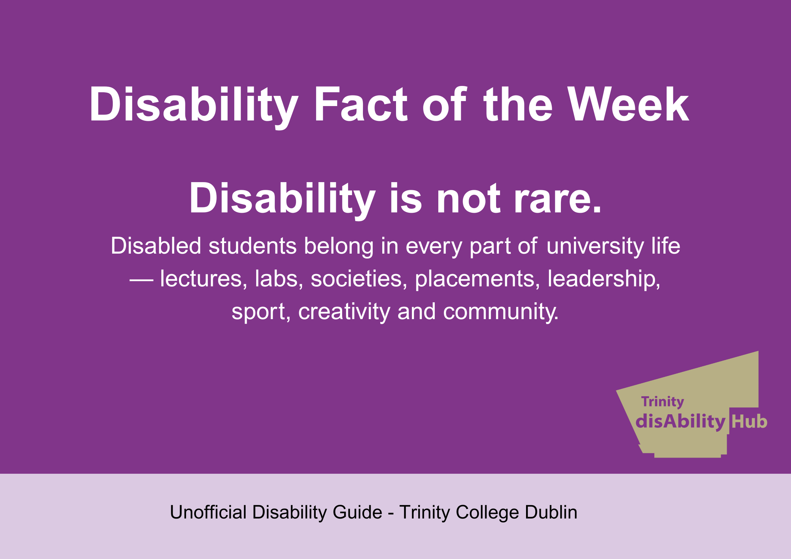

Trinity disAbility Service
Your first point of contact for disability-related support, advice and reasonable accommodations.
By students with disabilities, for students with disabilities.
Part student-life handbook and part honest best friend.

The Unofficial Disability Guide brings together practical information, student knowledge, resources and tips for students with disabilities at Trinity College Dublin.
This guide does not replace official Trinity policy or advice, but it can help you know where to start, what to ask, and where to find support.
Created by students with disabilities, for students with disabilities, this guide is produced in association with Trinity disAbility Service, Trinity Ability Co_op and DUNeS.
It is for anyone with any type of disability, including visible, invisible, physical, sensory, neurodivergent, mental health, chronic illness, fluctuating, temporary, diagnosed or undiagnosed disabilities.
Studying with a disability can sometimes feel confusing, tiring or lonely. Information can be spread across different webpages, offices, systems and people. This guide tries to bring some of that information together in one place, using clear language and student experience.
Starting university can be exciting, but it can also be overwhelming. There may be new buildings, new people, new routines, new systems and lots of information to take in. You do not have to do everything at once.
Services and student groups that may be useful when looking for disability-related support, advice, community or information.
Your first point of contact for disability-related support, advice and reasonable accommodations.
A Trinity initiative supporting sensory inclusion by improving campus spaces, raising sensory awareness, and providing specialist support for students who experience sensory barriers.
TCD Sense and disAbility Service projects opens in a new window
A student-led disability advocacy community for disabled students and allies.
A student society exploring neurodiversity, advocacy and shared experience.
Neurodiversity Society / DUNeS link page opens in a new window

Disabled students belong in every part of university life — lectures, labs, societies, placements, leadership, sport, creativity and community.
Contact Trinity disAbility Service and ask about registering, getting advice or finding out what supports may be available.
Check what reasonable accommodations, exam supports, learning supports or other arrangements are currently in place for you.
Look for advice on extensions, deferrals, exam accommodations, academic support and who to contact before things become unmanageable.
Look for Trinity Ability Co_op, DUNeS, disability-related events, peer support and ways to connect with other disabled students.
“Having support in place before things became overwhelming made a huge difference.”
Practical support may include exam accommodations, assistive technology, accessible learning materials, study strategies, note-taking support, recordings, captions, library supports, quiet spaces, or adjustments to how you access teaching and assessment.
Students should not have to make do with arrangements that are unsafe, exhausting, inaccessible or only barely manageable.
Check accessible entrances, routes, lifts, ramps, cobbles, toilets, seating, room layout and time between classes before term begins where possible.
Noise, crosstalk, lighting, crowds, smells or unpredictable spaces can make participation harder.
Fatigue, pain, anxiety and executive functioning can affect how much is possible in a day. Breaks are not failure.
Disabled students should have access to friendship, creativity, societies, events, leadership, rest, joy and community.
Sometimes access arrangements do not work, information is unclear, or students experience discrimination, exclusion or barriers to participation. You do not have to deal with this alone.
Keep a note of what happened, who was involved, when it happened, and what support you need. You can contact the disAbility Service, your tutor, the TCD Students' Union or another relevant support service for advice.
Neuro-Sensory Photography is a way of taking photos that shows how a place, object, or moment feels through the senses.
Most photos show what something looks like. Neuro-Sensory Photography asks a different question: What does this feel like to experience?
For neurodivergent people, such as autistic people, ADHD people, dyslexic people, or people with sensory sensitivities, these details can be very important.
Neuro-Sensory Photography is a creative and research-based photographic approach that explores how neurodivergent people experience the world through sensory perception.
Rather than using photography only to document people, places, or events as they appear visually, this approach uses the camera to communicate how environments are felt, processed, endured, enjoyed, resisted, or remembered through the body and senses.
Drawing inspiration from sensory ethnography, Neuro-Sensory Photography shifts attention away from purely textual description and toward lived sensory experience. It asks how light, sound, texture, movement, colour, pattern, distance, crowding, temperature, smell, and spatial layout shape a person’s experience of a place.
For neurodivergent individuals, these sensory details are often not background information; they can be central to safety, comfort, overwhelm, focus, identity, memory, and belonging.
This can include things like:
A place that looks ordinary to one person might feel too loud, too bright, too busy, or uncomfortable to someone else. Another place might feel peaceful, safe, calming, or easy to focus in.
Neuro-Sensory Photography helps people show these feelings through images. The photo does not have to be perfect. The most important thing is that it shows a sensory feeling or experience.
A student, photographer, or participant could use:
A bright corridor might be photographed as harsh and piercing. A quiet garden might be shown through softness, texture, and breathing space. A crowded room might be represented through visual noise, compression, and fragmented attention. A familiar object might be photographed as a point of regulation, comfort, or grounding.
Neuro-Sensory Photography is not just about taking a nice picture. It is about using photography to help others understand what a place feels like through the body and senses.
It is not about showing neurodivergent people as subjects to be observed from the outside. Instead, it centres neurodivergent perception as a valid and creative way of knowing the world.
It allows the photographer, participant, or viewer to ask: What does this place feel like? What sensory details are usually ignored? What creates calm, distress, focus, joy, safety, or exclusion? How can photography make invisible sensory experiences visible?
Imagine a hallway. One student might take a photo of the hallway when it is crowded and blurry to show that it feels noisy, rushed, and overwhelming. Another student might take a close-up photo of a quiet corner, a soft chair, or sunlight on the wall to show a place that feels calm and safe.
For this assignment, choose one place in your college home, garden, street, or community. Think about how that place feels through your senses.
Ask yourself:
Then take 3 to 5 photographs that show the sensory feeling of that place.
You could choose:
After taking your photos, choose your best one and write a short paragraph about it.
Your paragraph could answer:
My photo is of a crowded hallway after class. I took the photo slightly blurry because the hallway feels fast, loud, and confusing when lots of people are moving at the same time. The bright lights and the noise make it hard to think clearly. I wanted my photo to show that a hallway is not just a place to walk through. For some people, it can feel overwhelming. This photo might help others understand why quiet spaces and calmer routes can be important in college.
My photo is of a small corner near a window. The light is soft, and the wall is plain. I chose this photo because this space feels calm and quiet. It gives me a break from noise and busy classrooms. The photo shows that simple spaces can help people feel safe, focused, and comfortable.
As a practice, Neuro-Sensory Photography could be used in art, disability studies, accessibility research, campus design, mental health, education, and community storytelling.
It could help communicate why some environments are overwhelming, why others feel safe, and how sensory experience should be taken seriously in the design of public spaces.
It could also become a powerful form of self-expression, allowing neurodivergent people to represent their own sensory worlds in ways that are poetic, political, embodied, and deeply personal.
Students are invited to explore Neuro-Sensory Photography and create their own images using a phone, tablet, or camera. You do not need professional equipment. A simple photo taken on your phone can be enough if it helps show what a place, object, or moment feels like through the senses.
If you would like to find out more about how students can submit their photography, please contact Trinity disAbility Service at askds@tcd.ie.
Submitted photographs could help start conversations about sensory experience, neurodivergent perspectives, accessibility, calm spaces, overwhelming environments, and how colleges, and communities can become more inclusive.
At its heart, Neuro-Sensory Photography is about moving beyond the question “What does this look like?” and asking instead: “What does this feel like to experience?”
This is a living student guide. We would love to hear what disabled and neurodivergent students would like to see included, corrected, expanded, or contributed.
You can share a tip, access issue, student experience, useful resource, photo idea, or featured story suggestion.
This Trinity guide brings together student experience, practical information, lived knowledge and links to official supports in one accessible place.
Support. Belonging. Clear information. You are not alone.